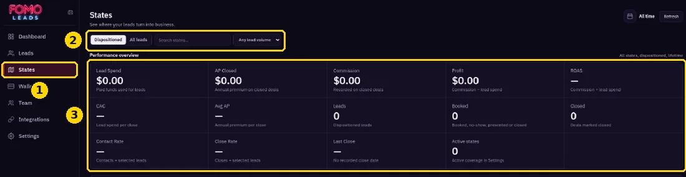
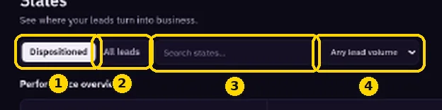

Viewing State Performance
See which of your states are delivering and converting.
https://members.fomoleads.io/states shows a performance table for each state.

- Switch between the Dispositioned and All leads tabs.
- Use search to find a state, and the volume filter to focus on busier states.

To change which states you cover, go to Coverage states in https://members.fomoleads.io/settings.